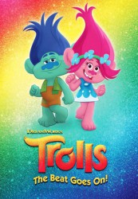

")
Alternativ: Trolls: The Beat Goes On! (Englischer Titel)
 
 IMDB-Wertung: 5.9 / 10
IMDB-Wertung: 5.9 / 10  Metascore:
Metascore: 
Neue Abenteuer der musikalischen Trolle mit den bunten Haaren, Branch und Poppy, und ihren nicht minder farbenfrohen Freunden.
Jahr: 2018
Dauer: 23 Minuten
FSK:
Land: USA Studio: NetflixTonspuren: DD5.1 - ,
Untertitel: Deutsch, Englisch,
Auflösung: 720p (1280x720) Größe: 505 MB
Genre: Komödie, Abenteuer, Fantasy, Animation/Trick, Familie, TV-Serie, Musical
Regisseur: Jim Mortensen, Alex Almaguer, Naz Ghodrati-Azadi, Zesung Kang, Spencer Laudiero
Drehbuch: John D'Arco, Matthew Ireland Beans, Walt Dohrn, Hannah Friedman, Mike Mitchell
Soundtrack:
Darsteller:
 Skylar Astin als Branch, 9 episodes, 2018
Skylar Astin als Branch, 9 episodes, 2018 Kevin Michael Richardson als Smidge, 9 episodes, 2018
Kevin Michael Richardson als Smidge, 9 episodes, 2018 Ron Funches als Cooper, 8 episodes, 2018
Ron Funches als Cooper, 8 episodes, 2018 Kari Wahlgren als Bridget, 7 episodes, 2018
Kari Wahlgren als Bridget, 7 episodes, 2018 Sam Lerner als King Gristle, 5 episodes, 2018
Sam Lerner als King Gristle, 5 episodes, 2018 David Koechner als Buzby, 3 episodes, 2018
David Koechner als Buzby, 3 episodes, 2018 Walt Dohrn als Cloud Guy, 2 episodes, 2018
Walt Dohrn als Cloud Guy, 2 episodes, 2018 Gary Cole als Sky Toronto, 2 episodes, 2018
Gary Cole als Sky Toronto, 2 episodes, 2018 Abby Ryder Fortson als Priscilla, 1 episode, 2018
Abby Ryder Fortson als Priscilla, 1 episode, 2018 Utkarsh Ambudkar als Master Controll, 1 episode, 2018
Utkarsh Ambudkar als Master Controll, 1 episode, 2018 Max Mittelman als Additional Voices, 1 episode, 2018
Max Mittelman als Additional Voices, 1 episode, 2018 Corina Boettger als Marshtato Mary, 1 episode, 2019
Corina Boettger als Marshtato Mary, 1 episode, 2019Datei: X:\Kinder Serien\Trolls Die Party geht weiter S02\Trolls Die Party geht weiter S02E01.mkv seit 17.04.2019
Festplatte: Kinder-Filme+Trick
 Es gibt insgesamt 56 Filme in der Gruppe 'Kinder Serien'
Es gibt insgesamt 56 Filme in der Gruppe 'Kinder Serien'